适用前端：
frontend-vue-ai-chat（Vue 3 + Vite） 后端：ai-agent-lite（FastAPI + 多智能体）、cdut-sandbox（isolate 判题沙盒）、PostgreSQL、Redis、Celery 本文档分两部分：第一部分 用户使用手册（仅覆盖当前前端实际提供的能力）、第二部分 系统部署手册。 验证环境：macOS + Docker。 仓库地址：https://github.com/guancyxx/cdut_stu_agents
系统是一个「OJ 题库 + AI 编程导师」一体化学习平台。学生登录后可以：
访问地址：
| 场景 | 地址 |
|---|---|
| 公共测试地址（外网） | http://8.137.155.24/ |
| 本地部署地址（本机） | http://localhost:5173/ |
两者是相互独立的两套部署（数据不互通），区别见部署手册 §10.1。本地部署基础管理员账号：admin / admin123456。
首次进入未登录会自动跳转到登录页 /auth。
顶部导航栏固定包含：主页、题库、比赛、个人中心；管理员额外显示「管理」。
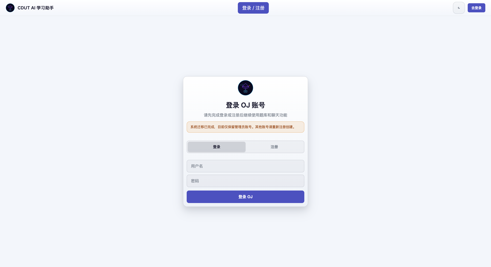
页面 /auth，可在「登录 / 注册」之间切换。
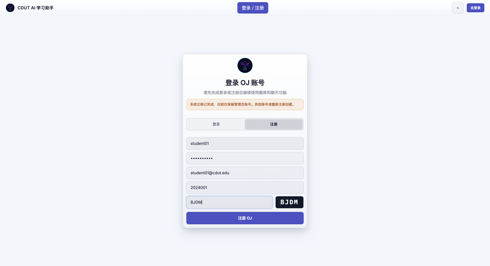
注意：系统迁移后仅保留管理员账号，普通学生需自行注册。账号体系由后端
ai_agent.local_users维护（与历史 qduoj 用户表独立）。
输入用户名 + 密码，点击「登录 OJ」。登录态基于后端会话 Cookie，刷新页面保持登录。右上角按钮显示当前用户名；点击进入个人中心。
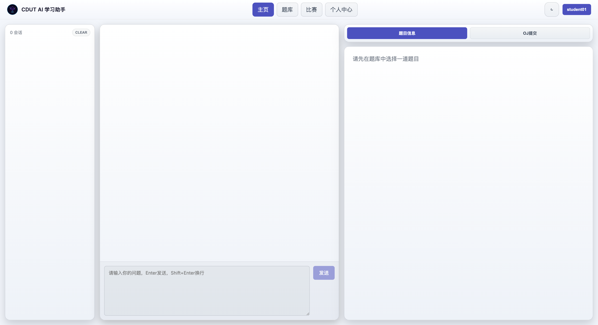
主页为三栏布局：
| 区域 | 内容 |
|---|---|
| 左侧栏 | 会话列表（每个会话对应一道题或一次自由对话），顶部显示会话数与「清空所有对话」 |
| 中间 | 对话区 + 底部输入框 |
| 右侧栏 | 「题目信息」/「OJ提交」两个标签页 |
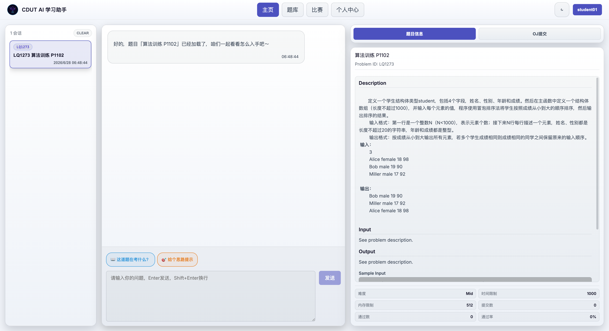
后端是一个 supervisor 多智能体系统，会把问题路由到子智能体：
code_reviewer（代码评审）、problem_analyzer（问题解析）、contest_coach（竞赛教练）、learning_partner（学习伙伴）、learning_manager（学习管理）。
处理过程中输入框上方会显示执行轨迹条（如 🧠 问题解析专家 ⟳ 运行中 / ✓ 已完成）。
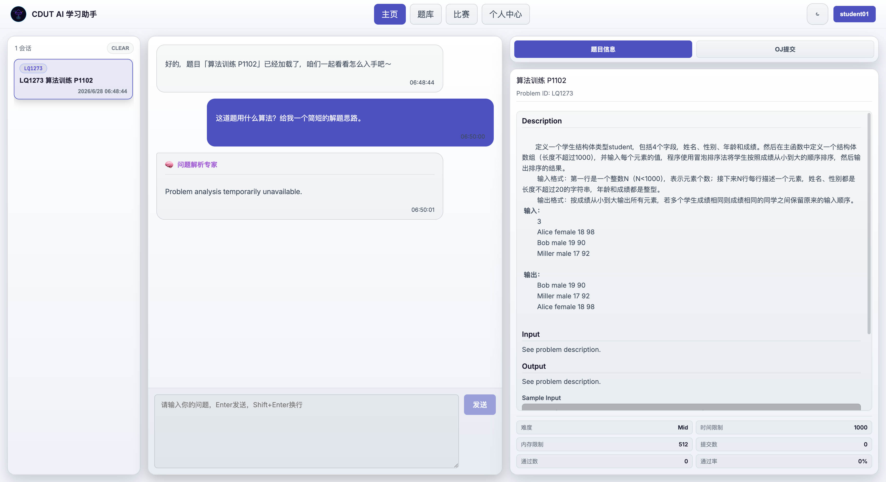
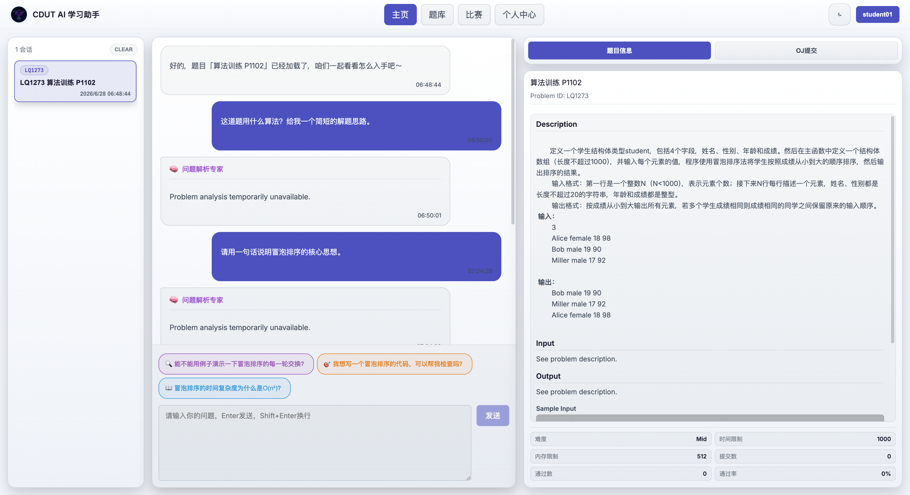
重要：AI 文本生成依赖外部 LLM（默认 DeepSeek）。配置有效
UTU_LLM_API_KEY后，子智能体返回完整回答（如上图「问题解析专家」给出冒泡排序讲解并反问追问）。若 Key 无效/欠费，则返回「temporarily unavailable」兜底文案（接口本身正常，仅 LLM 调用失败）。更换 Key 后必须重建容器（up -d --force-recreate，仅restart不会重新读取.env），详见部署手册 §12、§18。
在「OJ提交」面板里点「发给AI」不会立即发送，而是把代码（以及上一次判题结果）作为附件胶囊暂存到输入框上方。你可以检查后再点「发送」，附件会以 [Attachment] 文件名 + 代码块形式拼进消息。这样能把「代码 + 报错结果」一并交给 AI 点评。
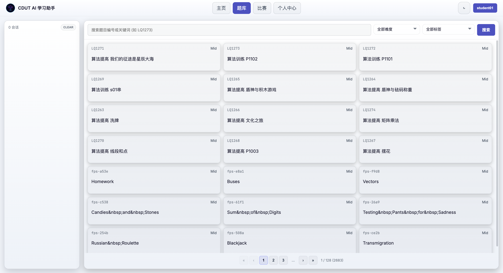
页面 /problemset：
LQ1273）。管理员在题库页额外可见「新增题目」按钮，每个题卡有「编辑」按钮。
选题后，主页右侧栏「题目信息」标签展示题面：描述、输入/输出格式、样例输入输出、提示（时间/内存限制）、来源、难度、提交数/通过数/通过率。
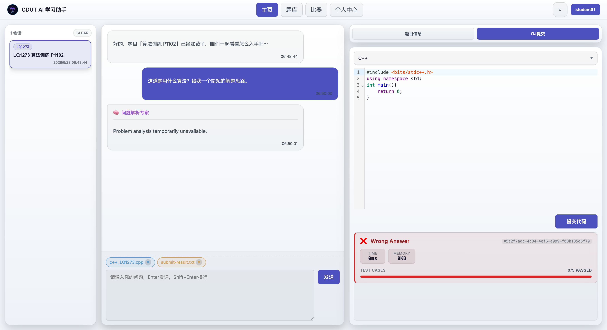
切到右侧栏「OJ提交」标签：
Accepted / Wrong Answer / Compile Error / Runtime Error / Time Limit Exceeded 等；0/5 PASSED）；判题链路：前端 →
ai-agent-lite→cdut-sandbox（isolate 沙盒）按题目对应的测试用例逐点运行 → 返回结果。需测试用例已恢复到data/test_cases（见部署手册 §15）。
每个会话的提交草稿（语言 + 代码 + 结果）会被独立保存，切换会话不丢失。
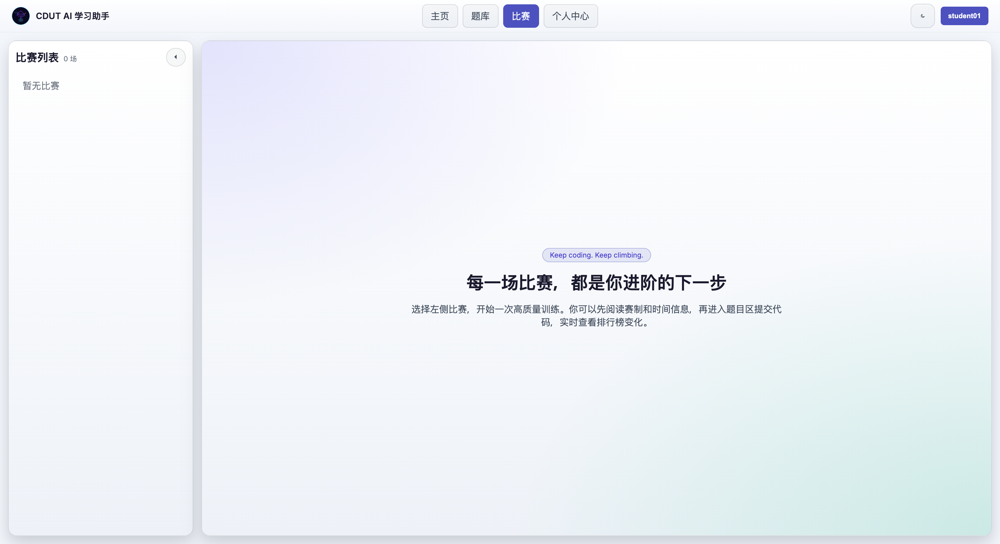
页面 /contest，左侧为比赛列表，右侧为比赛工作区：
管理员可见「新增比赛」按钮。
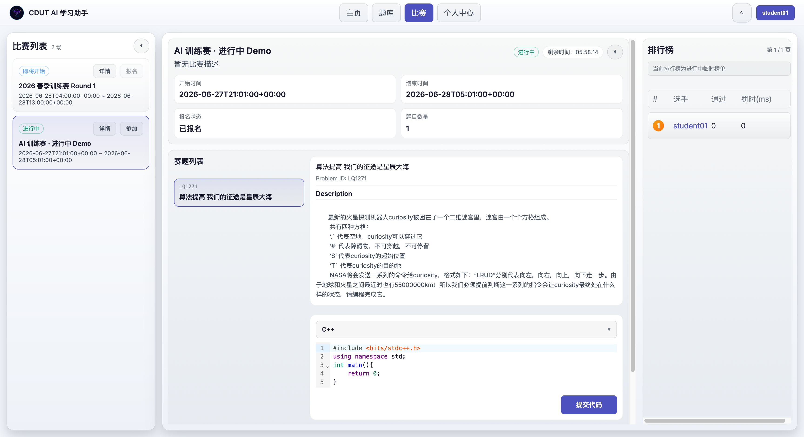
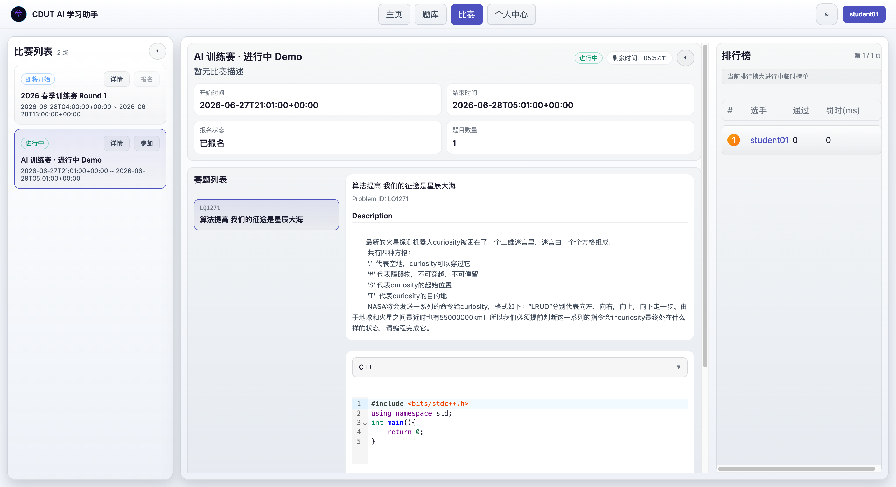
仅进行中且已报名才显示提交入口；未开始/已结束会显示对应提示（「比赛尚未开始」/「提交入口已关闭」）。 排行榜按通过数、罚时排序，横幅标注「进行中临时榜单 / 最终榜单」。
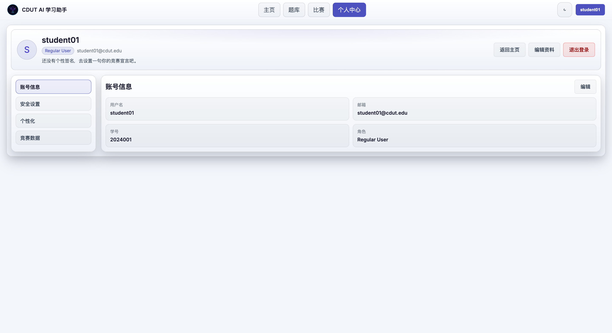
页面 /profile，顶部 Hero 展示头像（用户名首字母）、角色徽标（Regular User / Admin / Super Admin）、邮箱、个性签名。左侧分区导航：
| 分区 | 功能 |
|---|---|
| 账号信息 | 查看用户名/邮箱/学号/角色；「编辑」可改邮箱、学号 |
| 安全设置 | 修改密码（需旧密码校验，新密码 ≥6 位、两次一致） |
| 个性化 | 编辑个性签名（≤280 字） |
| 竞赛数据 | 登录状态、身份级别、资料完整度 |
右上角可「返回主页」「编辑资料」「退出登录」。
仅 admin_type ≥ 1 的账号在导航栏看到「管理」入口（/admin），普通用户访问会被重定向回主页。登录管理员账号后顶部导航多出「管理」一项。
/admin）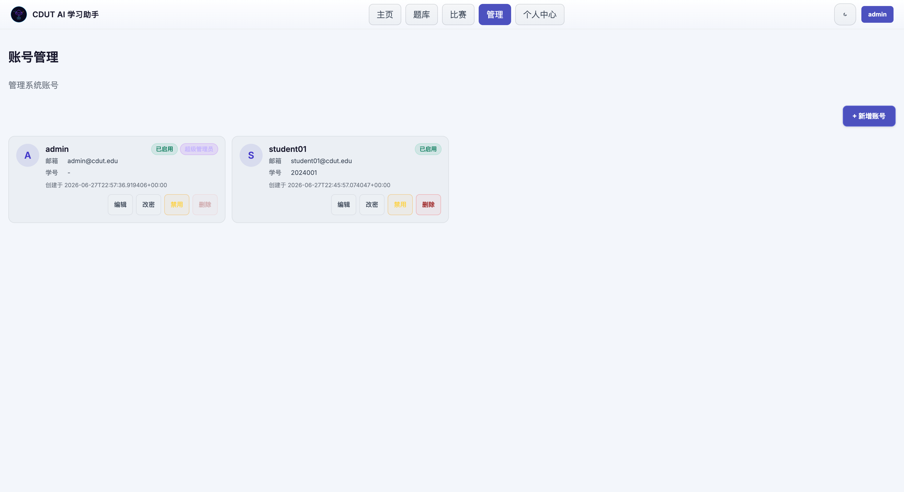
新增账号弹窗（用户名、初始密码、邮箱、学号、权限级别）：
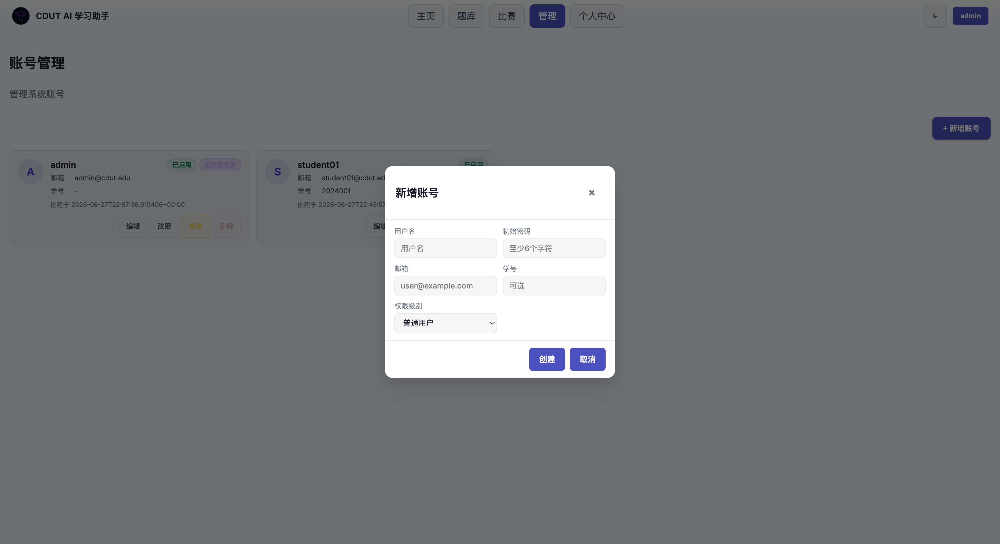
管理员在题库页右上角可见「新增题目」，每个题卡有「编辑」按钮：
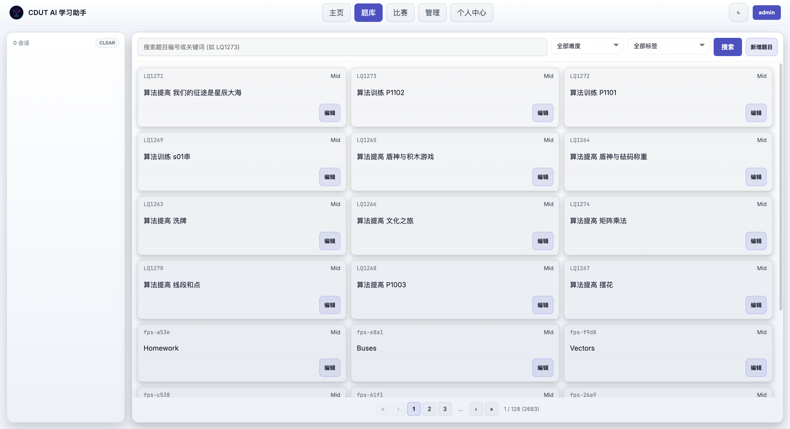
新增题目弹窗支持「单题上传 / 批量导入」两种模式，单题表单含：标题、难度、来源、题目描述、输入/输出描述、样例（可多组）、提示、标签、各语言模板代码（C/C++/Java/Python3）、测试数据（可多组）、时间/内存限制、特殊判题(SPJ)、公开可见：
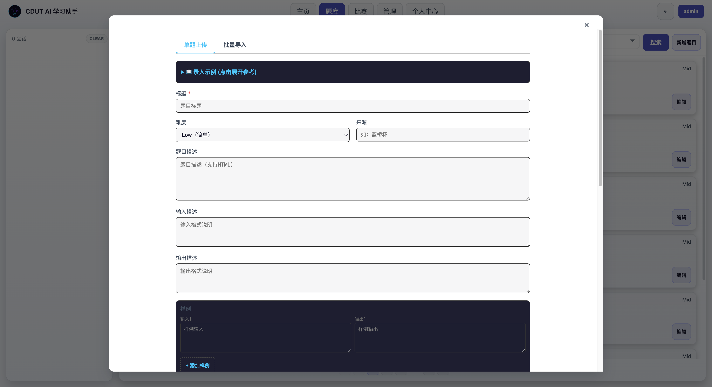
「编辑」题目可改题面、可见性、标签（ProblemEditModal）。
管理员在比赛列表可见「新增比赛」。弹窗含「比赛信息 / 题目信息」两个标签：
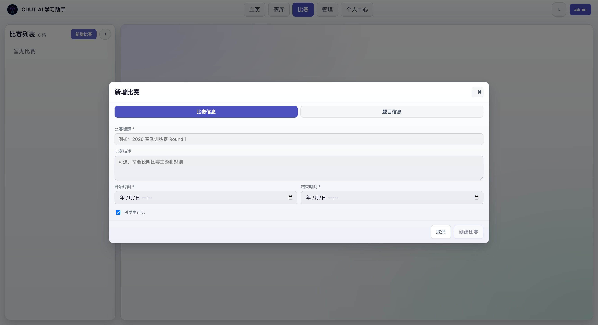
创建后比赛即出现在列表，按时间自动推导状态（即将开始/进行中/已结束）。下图为一场创建后进行中的比赛，带实时剩余倒计时、赛题列表与排行榜：
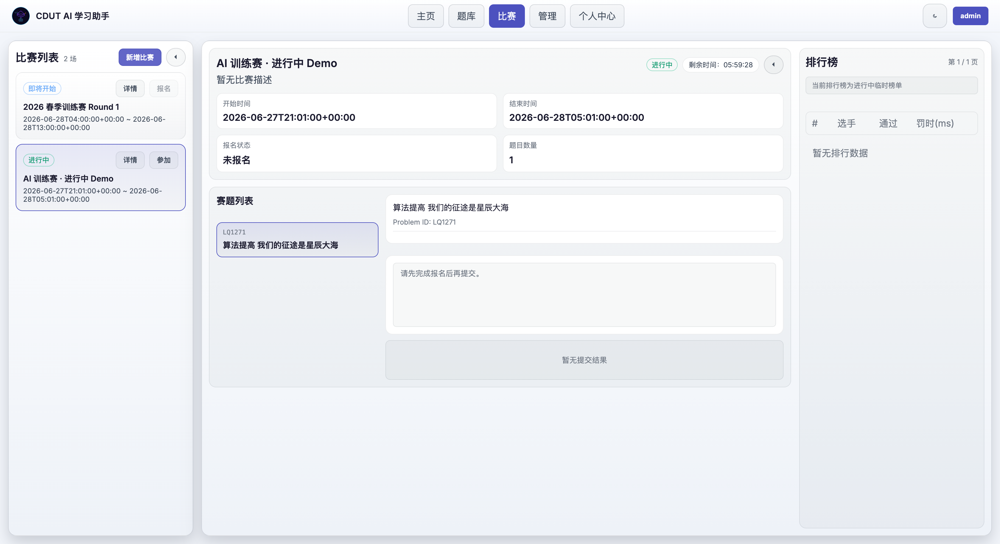
⚠️ 时间字段说明：前端创建比赛时会把所填时间按 UTC 提交（
normalizeDateTime追加Z）。若希望比赛「立即进行中」，填写开始/结束时间时需按 UTC 时间填（比北京时间早 8 小时），否则会比预期晚 8 小时开赛。
浏览器 (下为单套部署内部拓扑；公共/本地为两套独立部署，各一份)
│ 入口: 公共 http://8.137.155.24/(:80 反代→5173) 或 本地 http://localhost:5173/
├─ vue-ai-chat (Vite dev server, 宿主 5173)
│ ├─ /ws → ws://ai-agent-lite:8848 (WebSocket 代理)
│ ├─ /oj-api → http://ai-agent-lite:8848 (REST 代理, 去前缀)
│ └─ /oj-test-cases → http://ai-agent-lite:8848/oj
│
ai-agent-lite (FastAPI, 容器内 8848 → 宿主 8850)
├─ PostgreSQL cdut-postgres (schema: public=OJ数据, ai_agent=会话/账号)
├─ Redis cdut-redis (Celery broker/backend)
├─ Celery cdut-ai-agent-celery-worker (题目审核 audit 队列)
└─ Sandbox cdut-sandbox (isolate 判题, 宿主 8899)
| 服务 | 宿主端口 | 说明 |
|---|---|---|
| vue-ai-chat | 5173 | 前端 |
| ai-agent-lite | 8850 | 后端 API/WS（容器内 8848） |
| cdut-sandbox | 8899 | 判题沙盒 |
| cdut-postgres | 仅容器内 5432 | 不映射宿主，避免与其他项目冲突 |
| cdut-redis | 仅容器内 6379 | 不映射宿主 |
避免与其他 Docker 项目冲突：本项目所有容器名带
cdut-前缀，跑在独立的cdut-network桥接网络，Postgres/Redis 不暴露宿主端口。已确认 5173 / 8850 / 8899 与宿主上其它项目（magicedit-* 占用 80/3306/6379/8500 等、dreampal-* 占用 8300/8400/8600 等）无端口冲突。
两个地址是两套相互独立的部署，各自有独立的数据库、账号、题库与会话数据——不互通、不同步：
| 地址 | 类型 | 部署位置 | 数据 | 端口 |
|---|---|---|---|---|
http://8.137.155.24/ |
公共测试地址（外网） | 云服务器 | 独立一套 | 80（反向代理转发到容器 5173） |
http://localhost:5173/ |
本地部署地址（本机） | 本机 Docker | 独立一套 | 5173（compose 直接映射宿主） |
说明：
基础管理员账号（本地部署，由本手册 §16 方式 B 创建）：
| 用户名 | 密码 | 权限 |
|---|---|---|
admin |
admin123456 |
超级管理员（admin_type=2） |
该账号属于本地部署。公共测试地址为独立环境，管理员账号由该服务器维护方提供，未必相同。 ⚠️ 生产/公网环境请立即修改默认密码或删除该账号（个人中心 → 安全设置，或管理后台 → 改密）。
chat.completions 接口）——AI 对话功能必需。项目根目录 .env（参考 .env.example）。关键项：
# LLM（必需 —— AI 对话依赖）
UTU_LLM_TYPE=chat.completions
UTU_LLM_MODEL=deepseek-chat
UTU_LLM_BASE_URL=https://api.deepseek.com/v1
UTU_LLM_API_KEY=<你的有效 Key> # ← 务必有效，否则 AI 回复 401 兜底
# 搜索（可选）
SERPER_API_KEY=<可选>
# 题目审核 Celery worker 用的 LLM（可选）
# XIAOMI_API_KEY=<可选> # 未设置时 worker 仅警告，不影响主流程
# 前端端口（compose 内已固定）
UTU_WEBUI_PORT=8848
TZ=Asia/Shanghai
校验 LLM Key 是否有效：
curl -s -o /dev/null -w "%{http_code}\n" -X POST https://api.deepseek.com/v1/chat/completions \ -H "Authorization: Bearer $UTU_LLM_API_KEY" -H "Content-Type: application/json" \ -d '{"model":"deepseek-chat","messages":[{"role":"user","content":"hi"}],"max_tokens":5}'返回
200为有效；401表示 Key 无效/欠费（此时 AI 对话会回退为「temporarily unavailable」）。更换 Key 后必须重建容器（
restart不会重新注入compose的环境变量）：docker compose up -d --force-recreate ai-agent-lite ai-agent-celery-worker重建后浏览器刷新页面重连 WebSocket 即可。
cd /path/to/cdut_stu_agents
docker compose up -d --build
启动 6 个服务：cdut-postgres、cdut-redis、cdut-sandbox、ai-agent-lite、ai-agent-celery-worker、vue-ai-chat。
首次构建注意：
cdut-sandbox基于ubuntu:24.04需apt-get安装 isolate/JDK 等，偶发网络抖动导致exit code 100。重试即可：docker compose build cdut-sandbox && docker compose up -d
启动时序：
ai-agent-lite依赖 Postgres，首启可能因 Postgres 尚未就绪而ConnectionRefusedError退出。Postgres 起来后重启一次后端即可：docker compose restart ai-agent-lite ai-agent-celery-worker（后端
restart: unless-stopped，多数情况下会自愈。）
启动后后端会自动执行 init_db()：创建 ai_agent schema 及 local_users / sessions / messages 等表（幂等）。
全新 Postgres 卷不含 OJ 题库数据（public.problem 等表不存在，题库/比赛页会 500）。需恢复种子库。
备份位于 backups/：
| 文件 | 内容 |
|---|---|
qduoj_full_20260424_234948.sql |
全量 SQL（public.* OJ 表：problem/user/contest/submission + ai_agent.*） |
qduoj_full_20260424_234948.dump |
同上，pg_restore 自定义格式 |
qduoj_testcase_20260424_234948.tar.gz |
测试用例文件 |
恢复（追加式，向已存在的 cdut_oj 库导入）：
docker exec -i cdut-postgres psql -U cdut -d cdut_oj -v ON_ERROR_STOP=0 \
< backups/qduoj_full_20260424_234948.sql
ai_agent.*表因后端已建会报「already exists / multiple primary keys」——可忽略，public.*OJ 表会正常创建并载入数据。
校验：
docker exec cdut-postgres psql -U cdut -d cdut_oj -t -c \
"SELECT 'problems='||count(*) FROM public.problem;"
# 预期：problems=2683
恢复后重启后端使其连上完整库：docker compose restart ai-agent-lite。
判题需要测试用例落到 data/test_cases/<test_case_id>/（compose 已挂载该目录到沙盒 /data/test_cases）。
tar xzf backups/qduoj_testcase_20260424_234948.tar.gz \
-C data/test_cases --strip-components=1
# 校验：
ls data/test_cases | wc -l # 预期约 3528 个用例目录
tar 内顶层为
test_case/，故用--strip-components=1去掉前缀。
可通过 TEST_CASES_HOST_PATH 环境变量自定义宿主测试用例目录（默认 ./data/test_cases）。
账号存于 ai_agent.local_users，恢复后仍为空。两种方式：
方式 A（推荐，走正常流程）：浏览器打开 http://localhost:5173/auth → 注册（含验证码）。第一个注册的是普通用户。
方式 B（脚本造管理员，需直连 DB）：用后端自带的密码哈希工具生成 Django 兼容 pbkdf2_sha256 哈希再插库：
HASH=$(docker exec cdut-ai-agent-lite \
python -c "from app.utils.auth_helpers import hash_password; print(hash_password('你的密码'))")
docker exec cdut-postgres psql -U cdut -d cdut_oj -c \
"INSERT INTO ai_agent.local_users (username,password_hash,email,admin_type,is_disabled,created_at,updated_at)
VALUES ('admin','$HASH','admin@cdut.edu',2,false,now(),now())
ON CONFLICT (username) DO UPDATE SET password_hash=EXCLUDED.password_hash, admin_type=2;"
admin_type：0=普通，1=管理员，2=超级管理员。建好后即可登录并看到「管理」入口。
当前验证环境已用方式 B 创建超级管理员：用户名
admin/ 密码admin123456（admin_type=2）。生产环境请立即改密或删除。
# 后端就绪（db / llm / model）
curl -s http://localhost:8850/readyz
# 预期：{"ok":true,"db":true,"llm":true,"model":"deepseek-chat"}
# 前端
curl -s -o /dev/null -w "%{http_code}\n" http://8.137.155.24/ # 200
# 题库 API（需已恢复种子库）
curl -s "http://localhost:8850/api/problem/?offset=0&limit=2"
# 题目详情
curl -s "http://localhost:8850/api/problem/?problem_id=LQ1273"
readyz的llm:true仅表示配置存在，不代表 Key 有效；真实有效性以 §12 的直连测试为准。
完整页面冒烟（已验证）：注册登录 → 题库筛选/翻页 → 选题建会话 → AI 迎语 → 题面展示 → OJ 提交得到判题结果（含测试点）→ 个人中心 → 比赛空状态。
| 现象 | 原因 | 处理 |
|---|---|---|
题库/比赛页 500，日志 relation "problem" does not exist |
未恢复种子库 | 执行 §14 |
AI 回复「temporarily unavailable」，日志 LLM server returned 401 |
UTU_LLM_API_KEY 无效/欠费 |
换有效 Key 后 docker compose up -d --force-recreate ai-agent-lite ai-agent-celery-worker（注意：restart 不重读 .env，必须 --force-recreate），再刷新页面重连 |
后端启动即退出 ConnectionRefusedError |
Postgres 未就绪先于后端 | docker compose restart ai-agent-lite ai-agent-celery-worker |
cdut-sandbox 构建 exit code 100 |
apt 镜像网络抖动 | 重试 docker compose build cdut-sandbox |
| 提交一直 Judging / 判题失败 | 测试用例缺失或沙盒未起 | 检查 §15；docker compose ps cdut-sandbox；沙盒需 privileged |
worker 警告 XIAOMI_API_KEY is not set |
题目审核 LLM 未配 | 可忽略（不影响主流程），如需审核功能则配置 |
| 端口冲突 | 5173/8850/8899 被占 | 改 docker-compose.yml 端口映射 |
查看日志：
docker compose logs -f ai-agent-lite
docker compose logs --tail=50 cdut-sandbox
docker compose ps
# 停止（保留数据卷）
docker compose down
# 停止并删除数据（危险：清空 DB 卷与测试用例需自行确认）
docker compose down # 数据在宿主 ./data 下，down 不会删 bind 挂载
# 重建单个服务
docker compose up -d --build vue-ai-chat
# 备份数据库
docker exec cdut-postgres pg_dump -U cdut -d cdut_oj > backups/cdut_oj_$(date +%Y%m%d).sql
数据持久化在宿主：./data/postgres（库）、./data/redis、./data/test_cases、./data/{submissions,training,chat_history,problems}。
前端能力以 frontend-vue-ai-chat 当前代码为准。